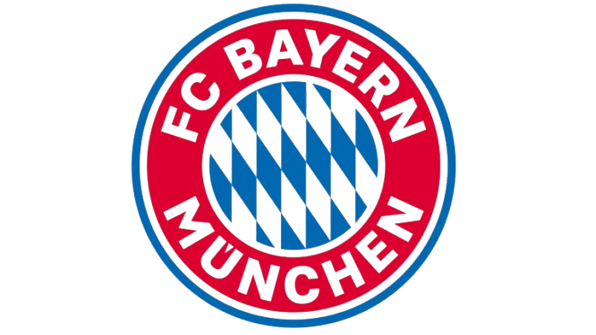
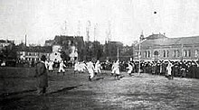
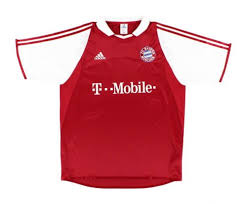
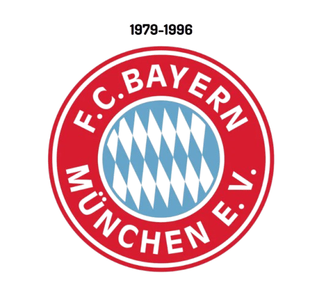
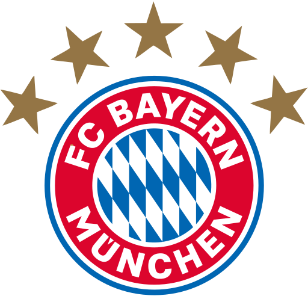

FC BAYERN MUNCHEN
Fußball-Club Bayern München e. V. (FCB, German pronunciation: [ˈfuːsbalˌklʊp ˈbaɪɐn ˈmʏnçn̩]), commonly known as Bayern Munich (German: Bayern München), FC Bayern (pronounced [ˌɛft͡seː ˈbaɪɐn] ⓘ) or simply Bayern, is a German professional sports club based in Munich, Bavaria. They are most known for their men's professional football team, who play in the Bundesliga, the top tier of the German football league system. Bayern are the most successful club in German football and are among the the world's most decorated, having won a record 33 national titles, including eleven consecutive
titles from 2013 to 2023 and a record 20 national cups, alongside numerous European titles.
Bayern Munich was founded in 1900 by eleven players, led by Franz John.[4] Although Bayern won its first national championship in 1932, the club was not selected for the Bundesliga during its inception in 1963. The club found success in the mid-1970s when, under the captaincy of Franz Beckenbauer, they won the European Cup three consecutive times (1974–1976). Overall,
Bayern have won six European Cup/UEFA Champions League titles (a German record), winning their sixth title in the 2020 final as part of the Treble, and it became the second European club to achieve this feat twice.
Bayern has also won one UEFA Cup, one European Cup Winners' Cup, two UEFA Super Cups, two FIFA Club World Cups and two Intercontinental Cups, making it one of the most successful European clubs internationally, and the only German club to have won both international titles. Bayern players have accumulated five Ballon d'Or awards, two The Best FIFA Men's Player awards,
five European Golden Shoe and three UEFA Men's Player of the Year awards, including UEFA Club Footballer of the Year.
By winning the 2020 FIFA Club World Cup, Bayern Munich became only the second club to win the "sextuple" (winning the League, Cup, and Champions League in one season followed by the Domestic Supercup, UEFA Supercup and Club World Cup in the next season), or all trophies that a club can win in a calendar year. Bayern Munich are one of five clubs to have won all three of UEFA's main club competitions and the only German club to achieve that. As of November 2024, Bayern Munich are ranked third in UEFA club rankings. The club has traditional local rivalries with 1860 Munich and 1. FC Nürnberg.
Since the beginning of the 2005–06 season, Bayern has played its home games at the Allianz Arena. Previously, the team had played at Munich's Olympiastadion for 33 years. The team colours are red and white, and the crest shows the white and blue flag of Bavaria. Bayern Munich has the largest revenue out of any German sports club and the third highest-earning football club in the world, behind Barcelona and Real Madrid, earning €634.1 million in 2021.[5] In December 2024, Bayern had more than 382,000 official members and 4,070 officially registered fan clubs, with over 318.000 members. The club has other departments for chess, handball, basketball, gymnastics, bowling, table tennis and senior football, with more than 1,100 active members.[6]
Bayern Munich

Full Name: Bayern Munich
Stadium: Allianz arena
Fans: Bavarians
Capacity 75,024[3]
President Herbert Hainer
CEO Jan-Christian Dreesen
Head coach Vincent Kompany
League Bundesliga
2023–24 Bundesliga, 3rd of 18
City: Munchen, Germany
First Created: 1923

Bayern Munich was founded by members of a Munich gymnastics club (MTV 1879). When a congregation of members of MTV 1879 decided on 27 February 1900
that the footballers of the club would not be allowed to join the German
Football Association (DFB), eleven members of the football division left the congregation and on the same evening
founded Fußball-Club Bayern München. Within a few months, Bayern achieved high-scoring victories against all local rivals, including a 15–0
win against Nordstern,[7] and reached the
semi-finals of the 1900–01 South German championship.[4] In the following years, the club won some local trophies,
and, in 1910–11, Bayern joined the newly founded "Kreisliga", the first regional Bavarian league. The club won this league in its first year,
but did not win it again until the beginning o
f the First World War in 1914, which halted all football activities in Germany.[8][9] By the end of its first decade of founding, Bayern
had its first German national team player, Max Gablonsky.[10] By 1920, it had over 700 members,
making it the largest football club in Munich.[10]



